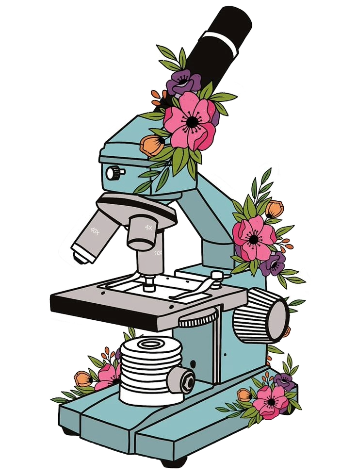

Hola, soy Emile López

Me encuentro cursando el tercer semestre de la licenciatura como médico cirujano en la Universidad Autónoma de Campeche (UACAM), estado donde vivo actualmente. Pasionaria de la ciencia y tecnología. Chica STEM.
Desarrollo Web
Desarrollo web Fron-End Junior, capacitada por el programa Tecnolochicas Pro de la Fundación Televisa.
Capacitaciones
Estudiante
Actualmente estudio la Licenciatura como Médico Cirujano en la Universidad Autónoma de Campeche, cuento con capacitación tecnica en Laboratorio Clínico. Desarrollo web Frond-End por Tecnolochicas Pro.


Tuve la oportunidad de trabajar con Emile en su etapa inicial como desarrolladora web, y quedé impresionada por su rápida capacidad de aprendizaje y su pasión por el desarrollo. A pesar de estar comenzando, mostró una gran habilidad para adaptarse a nuevas tecnologías. Su atención al detalle y su compromiso con el aprendizaje continuo son notables, lo que la convierte en un valioso miembro de cualquier equipo.
Britany Itaii Pérez Cadena
Desarrolladora Web

Emile ha sobresalido no solo en el aprendizaje de conceptos fundamentales en Sistemas computacionales, sino también en la aplicación práctica de estos conocimientos. Su capacidad para abordar problemas de manera innovadora y eficiente es realmente admirable, demostrando no solo sus habilidades técnicas, sino también su capacidad para trabajar en equipo y liderar a sus compañeros hacia el éxito.
Margarita Estrada Rodriguez
Embajadora | Chicas en tecnología

Emile es una profesional increíblemente dedicada que demuestra un esfuerzo constante por mejorar cada día. Su compromiso con su desarrollo profesional es evidente en la forma en que aborda cada proyecto con curiosidad y determinación. No solo busca perfeccionar sus habilidades técnicas, sino que también se esfuerza por superar sus propios límites como desarrolladora web.
Ana Paola Ruiz Garcia
Desarrolladora Web